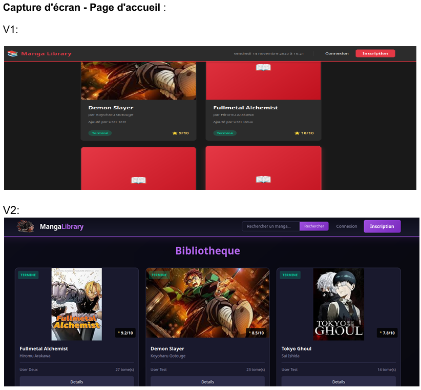
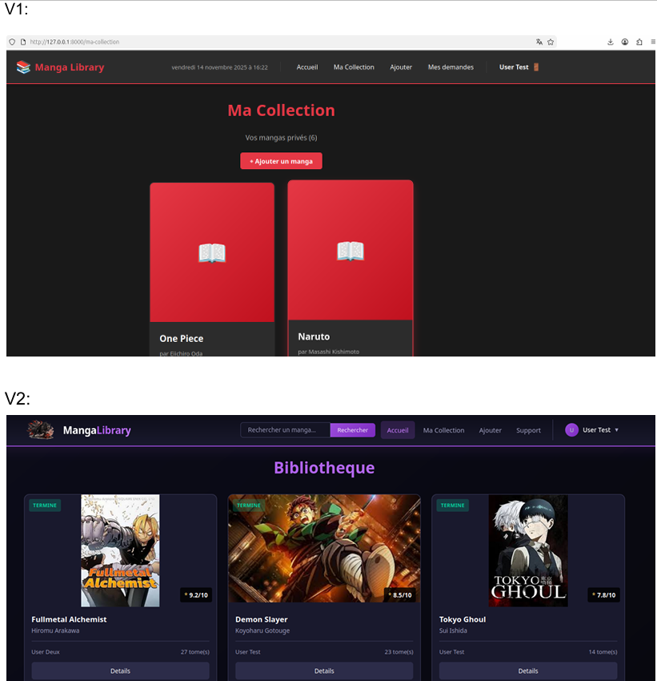
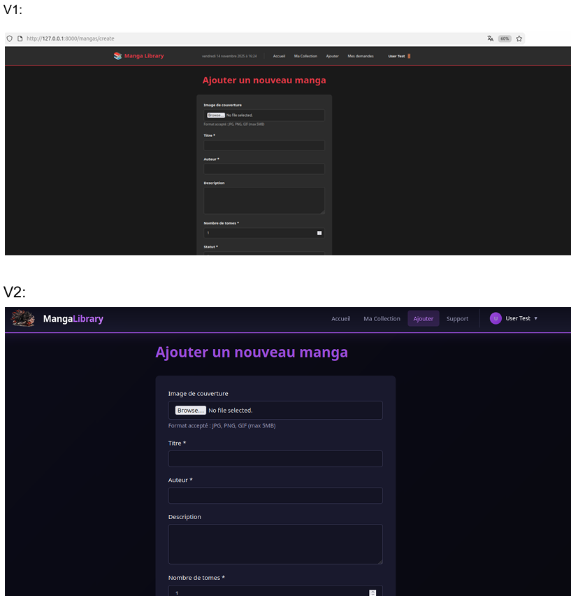

Mangatec — Médiathèque de mangas
Application web complète de gestion d'une médiathèque de mangas, développée avec Laravel 11 dans le cadre du dossier E6 du BTS SIO SLAM. Gestion multi-rôles, CRUD complet, architecture client/serveur virtualisée.
Contexte & objectifs
Mangatec est une application web de gestion d'une médiathèque spécialisée dans les mangas (comics japonais). Ce projet constitue le Dossier E6 du BTS SIO SLAM, réalisé à l'AFTEC de Vannes.
L'objectif était de concevoir et déployer une application complète permettant aux membres d'une médiathèque de consulter et gérer le catalogue de mangas, avec des droits différenciés selon le rôle de l'utilisateur.
Fonctionnalités réalisées
- UC1 — Authentification : inscription, connexion, déconnexion sécurisées (Laravel Breeze / Auth)
- UC2 — Consultation du catalogue : liste des mangas, recherche par titre / auteur / genre, affichage détaillé
- UC3 — Gestion du catalogue (modérateur / admin) : ajout, modification, suppression de mangas et de séries
- UC4 — Administration (admin uniquement) : gestion des utilisateurs, attribution des rôles, supervision
Gestion des rôles (Spatie Laravel Permission)
Trois niveaux d'accès distincts, gérés via le package Spatie Laravel Permission :
- User — consultation uniquement : lecture du catalogue, recherche
- Modérateur — gestion éditoriale : ajout et modification des fiches mangas, gestion du catalogue
- Administrateur — contrôle total : gestion des utilisateurs, attribution des rôles, administration complète
Architecture technique
- Framework : Laravel 11 — architecture MVC, routes nommées, middlewares
- Backend : PHP 8.2 — Eloquent ORM, relations Many-to-Many (mangas ↔ genres), migrations, seeders
- Base de données : MySQL 8.0 — schéma relationnel complet
- Templates : Blade — composants réutilisables, layouts partagés
- Permissions : Spatie Laravel Permission — rôles et permissions en base de données
Infrastructure virtualisée
Le projet a été déployé en environnement virtualisé, reproduisant une architecture client/serveur réelle :
- VM Serveur (Ubuntu Server) : Apache2, PHP 8.2, MySQL 8.0, application Laravel
- VM Client (Ubuntu Desktop) : accès à l'application via navigateur
- Connexion réseau local entre les VMs — simulation d'un environnement de production
Ce que j'ai appris
- Prise en main de Laravel 11 : routing, controllers, models, Eloquent
- Gestion des rôles et permissions avec Spatie — séparation nette des droits
- Conception de schémas relationnels et migrations
- Déploiement sur Apache Linux en environnement virtualisé
- Rédaction de documentation technique (Dossier E6 BTS SIO)
Aperçus du projet

Page d'accueil — évolution V1 → V2

Vue Ma Collection & Bibliothèque

Formulaire d'ajout de manga (V1 → V2)